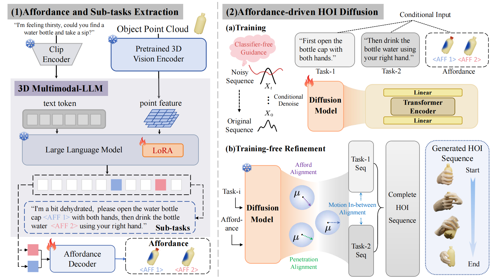
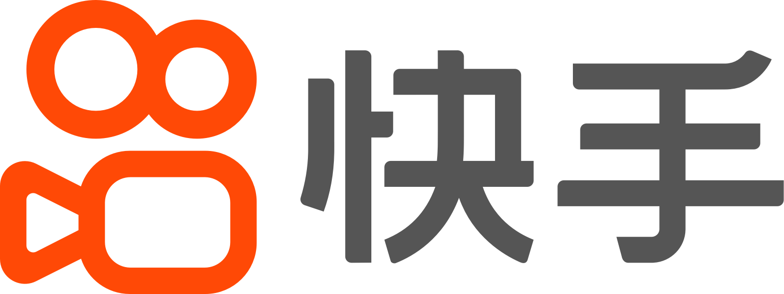

01 / About
I am an Incoming PhD Student at the Department of Automation, Tsinghua University supervised by Prof. Yebin Liu.
I will join Tencent IEG as a Qingyun Project Intern(腾讯青云计划) from October 2026 on Video World Model. Before that, I worked at Kling Team, Kuaishou Technology as an intern from June 2026 to October 2026 on Video Generation Post-training. I worked as a Research Intern at Tsinghua University from October 2025 to September 2026 on Video Generation Post-training. I worked at Signalplus as an Intern from June 2025 to August 2025 on Agentic Quant Trading Algorithm.
My research interests span Video Generation, Multimodal LLMs, and their applications in 3D vision and Embodied AI. I actively seek collaborations and friends. Feel free to contact me if you are interested in any of these areas.
我正在广泛的寻找科研合作与工业界实习机会，如果您对此感兴趣，欢迎与我联系!
02 / News
OR-Expert accepted by ACM Multimedia 2026.
DAG accepted by ECCV 2026.
Joined the Kling Team at Kuaishou Technology as an intern.
UniHM accepted by ICLR 2026.
SDEval accepted by AAAI 2026.
Joined Tsinghua University as a research intern.
OpenHOI accepted by NeurIPS 2025 as an Oral.
Joined SignalPlus as an intern.
QVPO accepted by NeurIPS 2024.
03 / Publications
04 / Experience
Tencent IEG
Video World Model(Qingyun Project)

Kling Team, Kuaishou Technology
Video Generation Post-training
Tsinghua University
Video Generation Post-training. Advisor: Prof. Yebin Liu
Signalplus
Agentic Quant Trading Algorithm
05 / Honors
- 2026.5ICML Gold Reviewer, ICML Foundation
- 2025.10NeurIPS Scholar Award, Neural Information Processing Foundation
- 2022.06Finalist, America Mathematics Contest in Modeling
06 / Academic service
- Journal reviewerTMLR
- Conference reviewerNeurIPS, ICLR, ICML, AAAI, CoRL, AISTATS